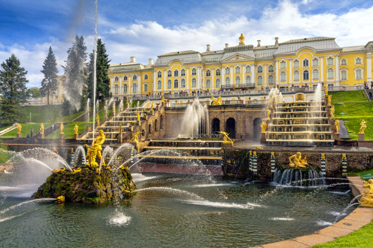

2. Петергоф (Петродворцовый район, Санкт-Петербург)

Санкт-Петербург был построен в начале XVIII века по воле русского царя Петра I. В течение двухсот лет Санкт-Петербург был столицей России. Недалеко от города, на южном берегу Финского залива, Петр I возвёл Петергоф – резиденцию для летнего загородного отдыха с множеством дворцов и прекрасным парком. Петергоф относится к самым красивым достопримечательностям России. Здесь на небольшой площади сосредоточилось огромное количество исторических сооружений и произведений искусства. Сегодня гости города на Неве могут добраться до Петергофа по воде. Специальные суда отправляются туда от Адмиралтейской набережной каждые полчаса, чтобы уже через 30-35 минут туристы добрались до места, знаменитого своими красивейшими фонтанами и памятниками известным историческим личностям. Побывав здесь, многие иностранные туристы, возвращающиеся домой, на вопрос о том, что посмотреть в России особенного, часто отвечают: «Петергоф!» Красота здешних парков, садов, позолоченных и мраморных скульптур и фонтанов сравнима с величием Версаля, и даже во многом его превосходит.